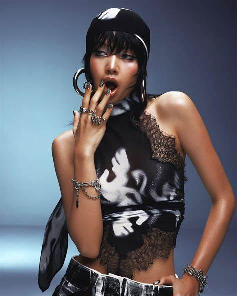

|  | Name | Lalisa Manobal (Lisa) |
| Date of Birth | March 27, 1997 | |
| Country | Thailand | |
| Career | Rapper, Singer, Dancer |
Lalisa Manobal, known mononymously as Lisa, is a Thai rapper, singer, and dancer based in South Korea. She is best known as a member of the South Korean girl group BLACKPINK, formed by YG Entertainment in 2016. Lisa is renowned for her exceptional dance skills, charismatic stage presence, and versatile rap and vocal abilities.
Lisa debuted with BLACKPINK in August 2016 with the single album "Square One," which includes hits like "Whistle" and "Boombayah." In September 2021, she made her solo debut with the single album "LALISA," breaking several records and earning widespread acclaim.
Lisa has received numerous awards and accolades as both a member of BLACKPINK and a solo artist, influencing fashion, beauty, and pop culture globally.